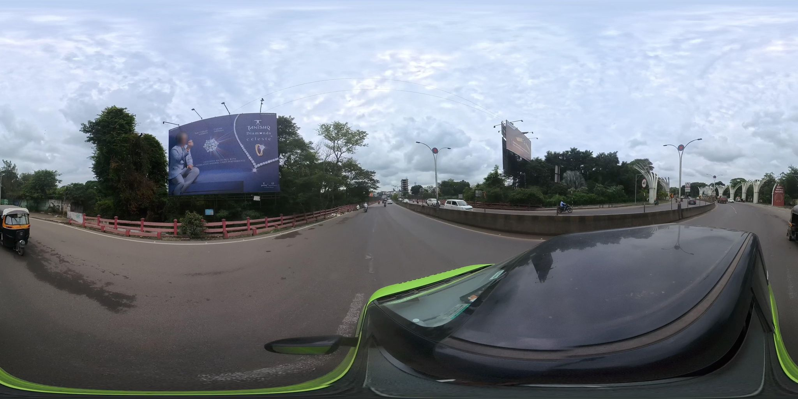
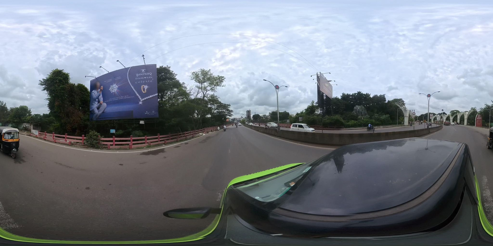
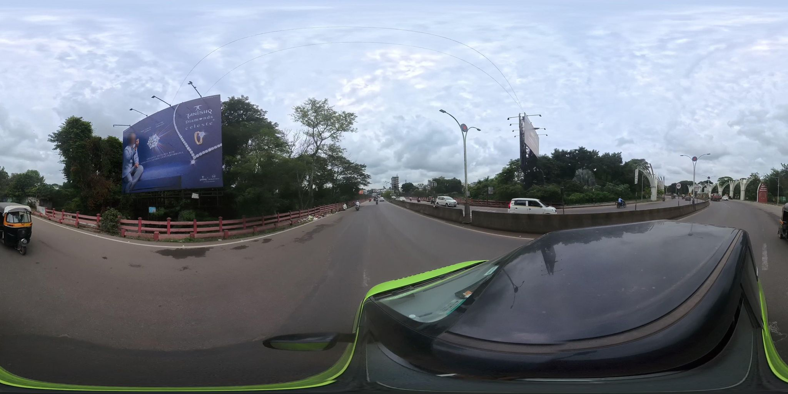
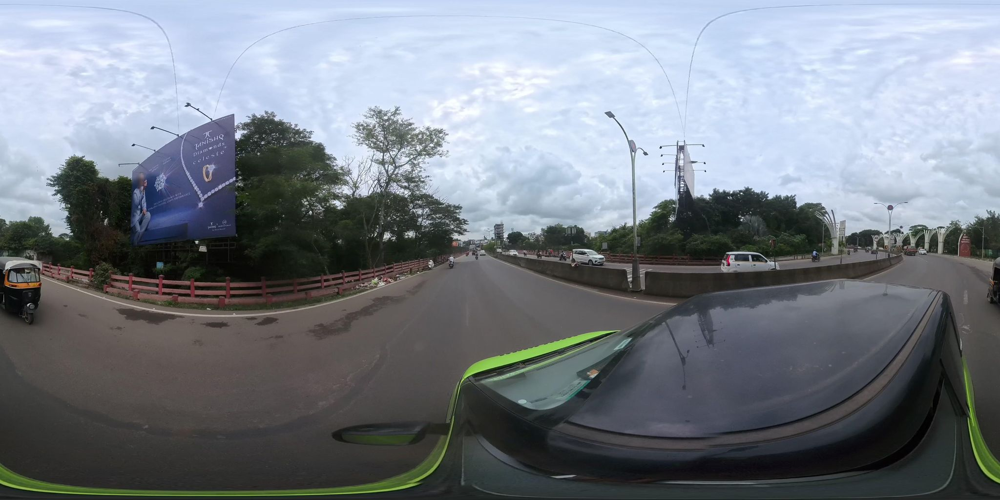
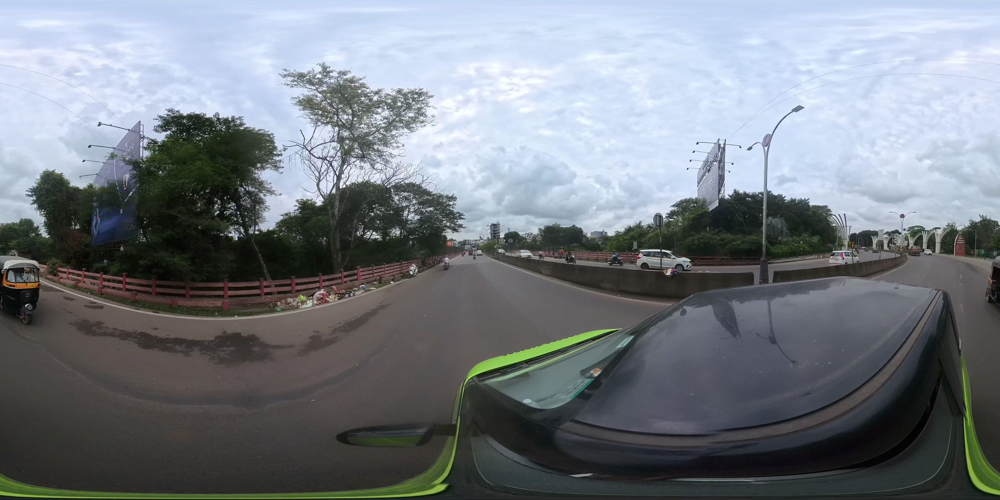
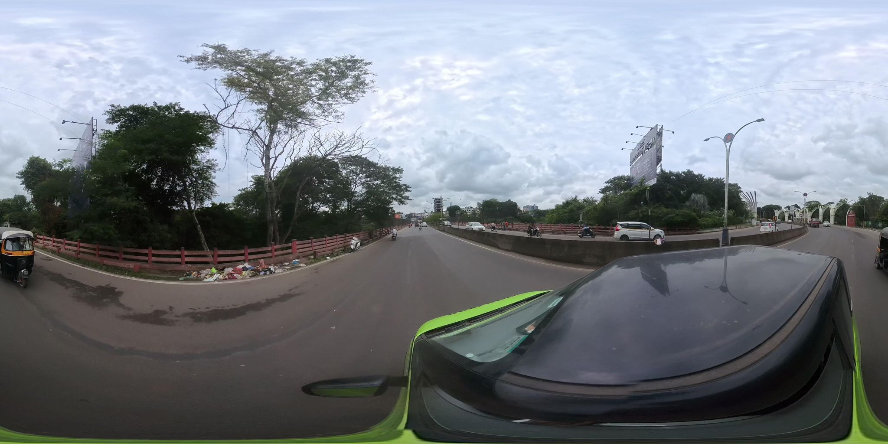
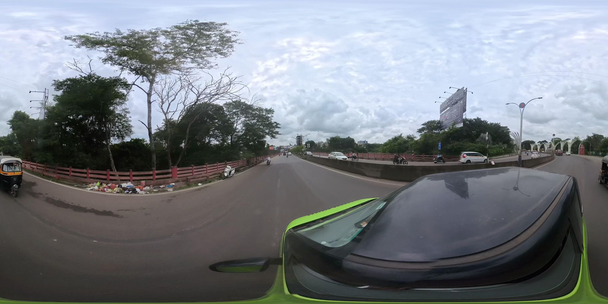
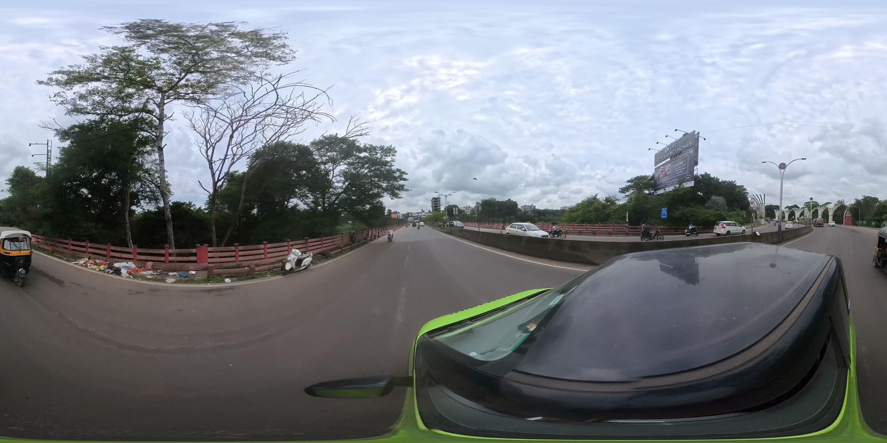

Weak accumulation, below label threshold
1750878528937567
Frame 1 of 9. A few white items are visible far along the railing verge ahead; the pile is too distant to label from this frame.
GEOCLEAN AI · MAPILLARY STREET-LEVEL METHOD V2
Nine consecutive frames centred on sample 765068579834233 (sequence BEohfHsAZiWFlVXwp7Gz4N, 17 September 2025), about 3 m apart. The mixed household-waste pile along the red railing verge appears in frames 2 to 9. These frames all show one physical site and must stay in the same split group.

Frame 1 of 9. A few white items are visible far along the railing verge ahead; the pile is too distant to label from this frame.

Frame 2 of 9. Mixed waste pile visible ahead on the verge along the red railing, beyond a parked scooter; small at this distance but clearly concentrated.

Frame 3 of 9. Same pile, closer; plastic bags and packaging spread along the verge at the railing base.

Frame 4 of 9. Same pile with green and white plastic items clearly visible along the railing.

Frame 5 of 9, the initial sample frame. Concentrated mixed household waste on the verge along the railing.

Frame 6 of 9. Pile now spans several railing bays: plastic bags, paper, cloth and food packaging.

Frame 7 of 9. Closest clear view; a dense spread of mixed household waste, cloth and plastic along the railing verge. Best candidate for a labelling example.

Frame 8 of 9. Camera beside the pile; waste spreads along the railing base next to the parked scooter.

Frame 9 of 9. Camera passing the pile; its tail end remains visible at the left of the verge view.